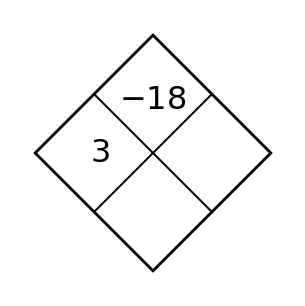
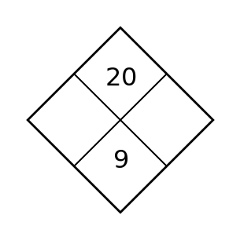

1
Complete the Diamond Problem.

Complete the Diamond Problem.
For $f(x)=(x+3)(x-4)$, state the zeros and x-intercepts.
A quadratic graph crosses the $x$-axis at $x=-2$ and $x=5$. Write a monic factored form.
Explain the connection among a factor $(x-6)$, the zero $x=6$, and the graph.
Solve $(x-5)(x+2)=0$.
Solve $(x-6)(x+3)=0$.
For $f(x)=(x+6)(x-2)$, state the zeros and x-intercepts.
For $f(x)=(x-2)(x+6)$, state the $x$-intercepts and direction of opening.
Solve $(x-9)(x+4)=0$.
A quadratic graph crosses the $x$-axis at $x=-7$ and $x=3$. Write a monic factored form.
For $f(x)=(x-5)(x+1)$, state the $x$-intercepts and direction of opening.
A student claims $g(x)=-(x+1)^2+4$ opens upward. Critique the claim.
Complete the Diamond Problem.

Rewrite $x^2-6x+5$ in vertex form.
For $f(x)=2(x+1)^2-8$, name the feature visible immediately and state it.
For finding zeros, which form is usually most revealing: standard, vertex, or factored? Explain briefly.
Find the constant that completes the square: $x^2+10x+\square$. Then factor the trinomial.
Find the constant that completes the square: $x^2+12x+\square$. Then factor the trinomial.
Rewrite $x^2-8x+7$ in vertex form.
Describe the translation from $y=x^2$ to $y=(x-4)^2+3$.
Find the constant that completes the square: $x^2+18x+\square$. Then factor the trinomial.
For $f(x)=3(x-2)^2+5$, name the feature visible immediately and state it.
Describe the translation from $y=x^2$ to $y=(x+5)^2-2$.
Write an equation for $y=x^2$ shifted left 2 and down 5.
Complete the Diamond Problem.

Factor out the greatest common factor: $6x^3-9x^2+3x$.
Rewrite $8x^2+12x$ by factoring out a common factor that makes later work easier.
A student writes $10x^2-15x=5(2x^2-3x)$. Is this fully factored by the GCF? Explain.
For $2x^2-5x+3=0$, record $a$, $b$, and $c$ with signs.
For $3x^2-7x+4=0$, record $a$, $b$, and $c$ with signs.
Factor out the greatest common factor: $8x^3-12x^2+4x$.
Simplify $(3x^2+2x-5)+(x^2-7x+4)$.
For $x^2-11x+5=0$, record $a$, $b$, and $c$ with signs.
Rewrite $10x^2+15x$ by factoring out a common factor that makes later work easier.
Simplify $(2x^2+3x-4)+(3x^2-5x+1)$.
Simplify $(5x^2-x+2)-(2x^2+4x-3)$.
Complete the Diamond Problem.

Factor $x^2-49$.
Factor $x^2+12x+36$.
Before factoring $9x^2-25$, identify the special pattern.
Choose an efficient method and solve $(x-4)(x+3)=0$.
Choose an efficient method and solve $(x-5)(x+4)=0$.
Factor $x^2-81$.
A table has constant first differences. Which familiar family is supported most strongly?
Choose an efficient method and solve $(x-8)(x+5)=0$.
Factor $x^2+14x+49$.
The table values $4,9,14,19$ have constant first differences of $5$. Which familiar function family is supported most strongly?
A table has a constant multiplicative ratio but not constant first differences. Which familiar family is supported?
Complete the Diamond Problem.

Factor $x^2+7x+12$.
Factor $x^2-x-20$.
Find two integers with product $-24$ and sum $5$. Use them to factor $x^2+5x-24$.
A quadratic has zeros $0$ and $13$ and passes through $(1,-12)$. Construct a factored model.
A quadratic has zeros $1$ and $12$ and passes through $(0,-12)$. Construct a factored model.
Factor $x^2+9x+20$.
Describe the transformations from $y=x^2$ to $y=-2(x-3)^2+1$.
A quadratic has zeros $2$ and $12$ and passes through $(0,24)$. Construct a factored model.
Factor $x^2-3x-28$.
Describe the transformations from $y=x^2$ to $y=3(x+2)^2-4$.
Apply $(x,y)\to(x+2,-3y)$ to the point $(1,4)$.